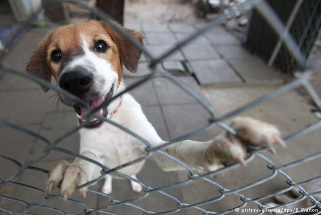

流浪動物的形成
「領養代替購買」在如今即使不養寵物的人都能琅琅上口的話，起源來至於2006年4月11日－國際寵物日。而流浪動物又是從什麼時候形成的呢？
在臺灣飼養寵物已有多年歷史，雖確切時間已不可考，但據陳第所寫的《東番記》，就有提到鄭和下西洋（1405）時見到臺灣原住民飼養動物的情形，故原住民飼養貓狗等動物的歷史，
至少可推至六百年前。而當時飼養寵物是為了協助狩獵，直至1970年代末至今，因為臺灣經濟發展迅速，百姓豐衣足食並有餘力養寵物，飼養寵物的價值也從實用性，轉變為娛樂玩賞的價值。
這百年來對寵物的絕育概念並無太多，因此流浪狗也慢慢逐漸形成。至今根據農委會109年的全國流浪犬數量統計顯示，臺灣約有15萬隻流浪犬，儘管政府每年捕捉收容上萬隻流浪犬，
並實施絕育措施，但始終無法控制流浪犬的數量。
臺灣流浪動物形成的主因分為：
【 放養犬貓 】
飼主放任犬貓自由行走，而且通常都尚未絕育，因此犬貓四處交配繁殖，衍生更多浪貓浪犬。
【 不肖商人的非法繁殖 】
許多不肖業者利用消費者喜歡純種犬貓的偏好，惡意地去繁殖純種貓犬，而一些無法繁殖的老年犬貓，則是棄養於街頭任其自生自滅。
【 家寵的走失 】
其中包含犬貓迷路、飼主惡意棄養，根據相信動物協會在2017年北北基絕育的2705隻浪犬中統計，有近12.8%屬於走失犬。
根據社團法人臺灣懷生相信動物協會（簡稱相信動物）所做的「臺灣浪犬來源大調查」，放養家犬與野犬的比例高達70%以上，是貢獻最多浪犬的高產能族群。

牠們露宿街頭會遭遇什麼
少了家的庇護，流浪是條忐忑路
倘若你沒有了家，你的日子會是什麼模樣?臺灣有將近15萬隻浪犬無家可歸，而他們隨時都可能面臨著生命危險......
【 受凍挨餓 】
浪浪在外生存無依靠，只能靠自己找尋穩定的食物來源，否則有一餐無一餐是習以為常的事情，再加上生活環境糟糕，浪浪有可能染病而亡。
【 天災人禍 】
浪浪無所不在，有些浪浪時常在車水馬龍的車陣中四竄，牠們可能因為車輛閃躲不及，而發生意外。颱風、寒流、豪大雨等極端天氣也是考驗之一。
【 遭受攻擊 】
遊走在郊外的浪浪，有些會成群結黨，有些則是孤身獨立，當牠們生活範圍重疊時，可能會發生衝突，因此造成傷亡，而除了同類相鬥之外，浪浪也可能遭受有心人士的報復或惡意傷害。
雖然貓狗在臺灣常被視為擁有特殊待遇的一群，不只現行的法律常被質疑是否獨厚貓狗，甚至到了要立法限制吃食的程度；許多人對待動物的態度亦彷彿映證了所謂「愛動物」 多半僅侷限於自家寵物，部分飼主任由寵物在野外活動的行為，更讓關懷野生動物處境者憂心犬貓造成生態環境失衡。
但對於關心流浪動物議題的人來說，臺灣流浪動物的處境。
多半僅侷限於自家寵物，部分飼主任由寵物在野外活動的行為，更讓關懷野生動物處境者憂心犬貓造成生態環境失衡。
領養前注意
雖然貓狗在臺灣常被視為擁有特殊待遇的一群，不只現行的法律常被質疑是否獨厚貓狗，甚至到了要立法限制吃食的程度；許多人對待動物的態度亦彷彿映證了所謂「愛動物」 多半僅侷限於自家寵物，部分飼主任由寵物在野外活動的行為，更讓關懷野生動物處境者憂心犬貓造成生態環境失衡。但對於關心流浪動物議題的人來說，臺灣流浪動物的處境， 或許會讓他們有完全不同的感受。
但對於關心流浪動物議題的人來說，臺灣流浪動物的處境。
多半僅侷限於自家寵物，部分飼主任由寵物在野外活動的行為，更讓關懷野生動物處境者憂心犬貓造成生態環境失衡。
- 阿貓阿狗
- 阿貓阿狗
- 阿貓阿狗

雖然貓狗在臺灣常被視為擁有特殊待遇的一群，不只現行的法律常被質疑是否獨厚貓狗，甚至到了要立法限制吃食的程度；許多人對待動物的態度亦彷彿映證了所謂「愛動物」 多半僅侷限於自家寵物，部分飼主任由寵物在野外活動的行為，更讓關懷野生動物處境者憂心犬貓造成生態環境失衡。但對於關心流浪動物議題的人來說，臺灣流浪動物的處境， 或許會讓他們有完全不同的感受。
領養後注意
但對於關心流浪動物議題的人來說，臺灣流浪動物的處境。
多半僅侷限於自家寵物，部分飼主任由寵物在野外活動的行為，更讓關懷野生動物處境者憂心犬貓造成生態環境失衡。
雖然貓狗在臺灣常被視為擁有特殊待遇的一群，不只現行的法律常被質疑是否獨厚貓狗，甚至到了要立法限制吃食的程度；許多人對待動物的態度亦彷彿映證了所謂「愛動物」 多半僅侷限於自家寵物，部分飼主任由寵物在野外活動的行為，更讓關懷野生動物處境者憂心犬貓造成生態環境失衡。但對於關心流浪動物議題的人來說，臺灣流浪動物的處境， 或許會讓他們有完全不同的感受。
雖然貓狗在臺灣常被視為擁有特殊待遇的一群，不只現行的法律常被質疑是否獨厚貓狗，甚至到了要立法限制吃食的程度；許多人對待動物的態度亦彷彿映證了所謂「愛動物」 多半僅侷限於自家寵物，部分飼主任由寵物在野外活動的行為，更讓關懷野生動物處境者憂心犬貓造成生態環境失衡。但對於關心流浪動物議題的人來說，臺灣流浪動物的處境， 或許會讓他們有完全不同的感受。
但對於關心流浪動物議題的人來說，臺灣流浪動物的處境。
多半僅侷限於自家寵物，部分飼主任由寵物在野外活動的行為，更讓關懷野生動物處境者憂心犬貓造成生態環境失衡。